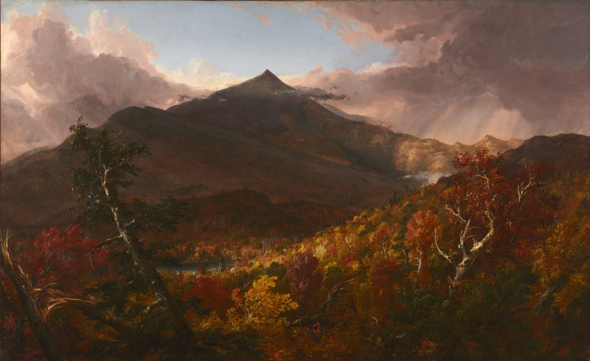

Homer painted this
in his seventies,
living alone by the
sea. you can feel it.
but every storm has an after, and the after is its own weather.
winslow homer, in his seventies, alone on a cliff in maine. the storm is technically over but nobody's told the sea yet — it's still heaving while the light tries, tentatively, to come back.

and thomas cole gives us the moment after that — the mountain rinsed clean, the whole forest catching fire with autumn light. the clearing moment. when you believe in light again.

the light is already
trying to come back
← look at that sky
Cole was 37
when he made this.
believe in light again ↓